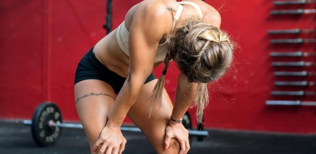
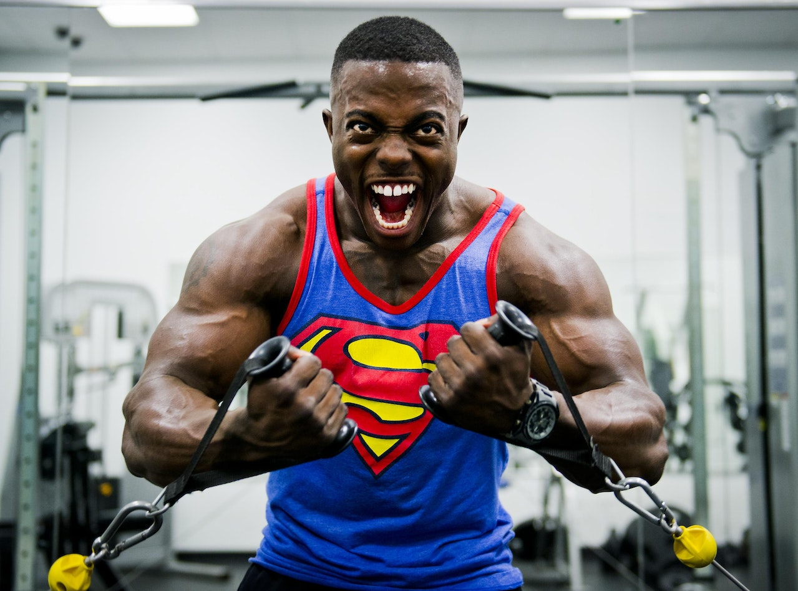

Energia
Você imagina um carro funcionando sem algum tipo de combustível? Seja gasolina, etanol ou, até mesmo, a eletricidade, os automóveis necessitam de energia para trabalhar. Assim também funciona o nosso corpo: sem qualquer energia, ele não consegue cumprir suas funções mais básicas, como respirar ou digerir, quem dirá realizar outras atividades que necessitam de maior gasto energético, como treinar. Por isso, ela é tão importante para quem quer ter o máximo de sua performance no treino.
Quais as melhores formas de ter disposição?
A natureza é realmente muito sábia. O nosso corpo dispõe de mais de uma fonte de energia, o que garante a sua sobrevivência. Por meio dos alimentos, o organismo recebe as calorias que são convertidas em energia para ser utilizada nas atividades. Porém, se não for usada no momento correto, ela é estocada em forma de gordura corporal para ser gasta em outra oportunidade. Dessa maneira, além da alimentação, conseguimos ter mais disposição queimando essa gordura. Para isso, algumas substâncias dão uma força extra, como os termogênicos — que ativam o metabolismo acelerando essa combustão. Existem também elementos que são estimulantes. Eles agem no cérebro deixando-o mais alerta e disposto, dando aquele pique para o corpo realizar as atividades. Lembrando que esses compostos podem ser encontrados na forma de suplementos alimentares.
Quando a suplementação é indicada para aumentar a energia?
Muitas vezes, somente a alimentação não é suficiente para termos a energia necessária para encarar um treino pesado - e é aí que entram os suplementos. Esses produtos facilitam o dia a dia de quem quer aumentar o desempenho e alcançar o corpo tão desejado. Vale lembrar que a prescrição deve ser feita pelo nutricionista, pois é o profissional capacitado para identificar as necessidades do organismo e suplementar de forma adequada.
